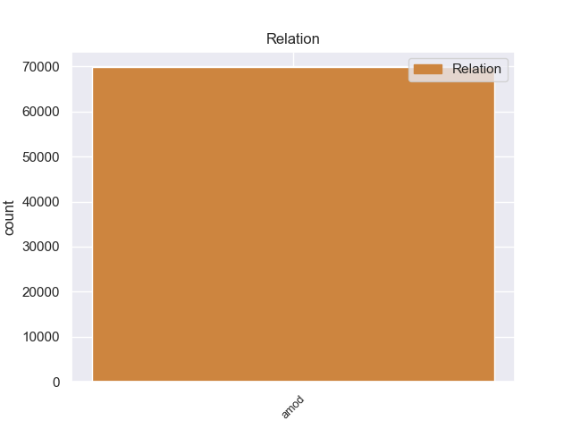
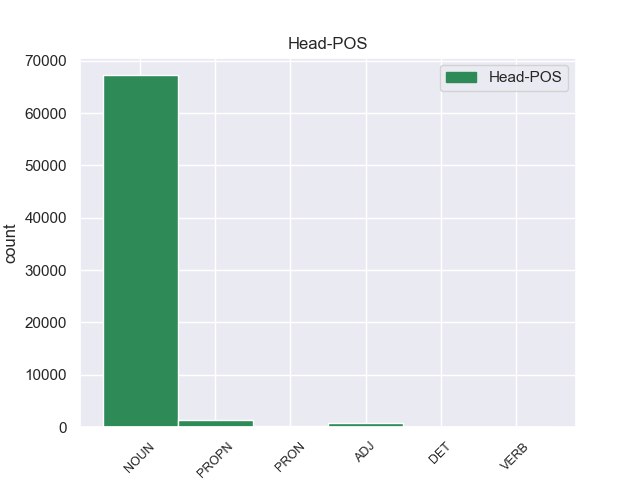
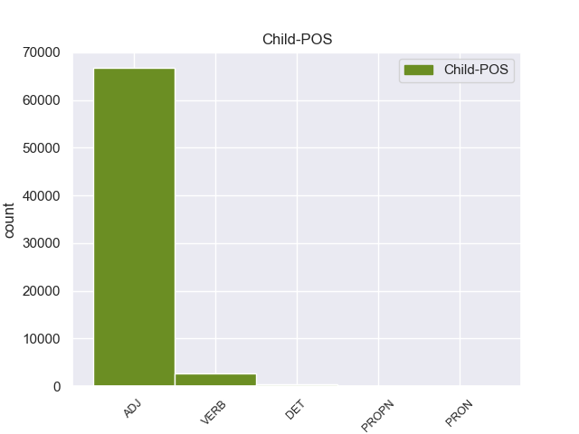

Distribution of features within this leaf



Agreement Rules sorted by frequency.
- When the dependent token is the adjectival modifier(amod) of the head token, and the dependent token is ADJ.
1 А _ _ _ _ 0 _ _ _
2 может _ _ _ _ 0 _ _ _
3 быть _ _ _ _ 0 _ _ _
4 , _ _ _ _ 0 _ _ _
5 кто-то _ _ _ _ 0 _ _ _
6 - _ _ _ _ 0 _ _ _
7 на _ _ _ _ 0 _ _ _
8 другом другой ADJ _ Case=Loc|Degree=Pos|Gender=Masc|Number=Sing 9 amod 9:amod _
9 конце конец NOUN _ Animacy=Inan|Case=Loc|Gender=Masc|Number=Sing 0 _ _ _
10 тоже _ _ _ _ 0 _ _ _
11 пробует _ _ _ _ 0 _ _ _
12 ее _ _ _ _ 0 _ _ _
13 расчистить _ _ _ _ 0 _ _ _
14 ? _ _ _ _ 0 _ _ _
1 Он _ _ _ _ 0 _ _ _
2 осторожно _ _ _ _ 0 _ _ _
3 , _ _ _ _ 0 _ _ _
4 за _ _ _ _ 0 _ _ _
5 дужку _ _ _ _ 0 _ _ _
6 , _ _ _ _ 0 _ _ _
7 снял _ _ _ _ 0 _ _ _
8 очки _ _ _ _ 0 _ _ _
9 , _ _ _ _ 0 _ _ _
10 ему _ _ _ _ 0 _ _ _
11 хотелось _ _ _ _ 0 _ _ _
12 получше _ _ _ _ 0 _ _ _
13 рассмотреть _ _ _ _ 0 _ _ _
14 человека _ _ _ _ 0 _ _ _
15 , _ _ _ _ 0 _ _ _
16 задающего _ _ _ _ 0 _ _ _
17 такие _ _ _ _ 0 _ _ _
18 несуразные _ _ _ _ 0 _ _ _
19 вопросы _ _ _ _ 0 _ _ _
20 , _ _ _ _ 0 _ _ _
21 а _ _ _ _ 0 _ _ _
22 припылившиеся припылиться VERB _ Aspect=Perf|Case=Nom|Number=Plur|Tense=Past|VerbForm=Part|Voice=Mid 23 amod 23:amod _
23 стекла стекло NOUN _ Animacy=Inan|Case=Nom|Gender=Neut|Number=Plur 0 _ _ _
24 только _ _ _ _ 0 _ _ _
25 мешали _ _ _ _ 0 _ _ _
26 . _ _ _ _ 0 _ _ _
1 - _ _ _ _ 0 _ _ _
2 У _ _ _ _ 0 _ _ _
3 меня я PRON _ Case=Gen|Number=Sing|Person=1 0 _ _ _
4 одного один DET _ Case=Gen|Degree=Pos|Gender=Masc|Number=Sing 3 amod 3:amod _
5 - _ _ _ _ 0 _ _ _
6 нет _ _ _ _ 0 _ _ _
6.1 _ _ _ _ _ 0 _ _ _
7 . _ _ _ _ 0 _ _ _
1 Назову _ _ _ _ 0 _ _ _
2 несколько _ _ _ _ 0 _ _ _
3 весьма _ _ _ _ 0 _ _ _
4 заметных _ _ _ _ 0 _ _ _
5 в _ _ _ _ 0 _ _ _
6 республике _ _ _ _ 0 _ _ _
7 руководителей _ _ _ _ 0 _ _ _
8 - _ _ _ _ 0 _ _ _
9 председателя _ _ _ _ 0 _ _ _
10 Петрозаводского Петрозаводский PROPN _ Animacy=Inan|Case=Gen|Gender=Masc|Number=Sing 11 amod 11:amod _
11 горисполкома горисполком NOUN _ Animacy=Inan|Case=Gen|Gender=Masc|Number=Sing 0 _ _ _
12 П. _ _ _ _ 0 _ _ _
13 Пещенко _ _ _ _ 0 _ _ _
14 , _ _ _ _ 0 _ _ _
15 секретарей _ _ _ _ 0 _ _ _
16 обкома _ _ _ _ 0 _ _ _
17 партии _ _ _ _ 0 _ _ _
18 О. _ _ _ _ 0 _ _ _
19 Ленсу _ _ _ _ 0 _ _ _
20 , _ _ _ _ 0 _ _ _
21 Н. _ _ _ _ 0 _ _ _
22 Кирьянову _ _ _ _ 0 _ _ _
23 , _ _ _ _ 0 _ _ _
24 заместителя _ _ _ _ 0 _ _ _
25 Председателя _ _ _ _ 0 _ _ _
26 Совета _ _ _ _ 0 _ _ _
27 Министров _ _ _ _ 0 _ _ _
28 Карелии _ _ _ _ 0 _ _ _
29 Г. _ _ _ _ 0 _ _ _
30 Сысоеву _ _ _ _ 0 _ _ _
31 ( _ _ _ _ 0 _ _ _
32 теперь _ _ _ _ 0 _ _ _
33 она _ _ _ _ 0 _ _ _
34 уже _ _ _ _ 0 _ _ _
35 на _ _ _ _ 0 _ _ _
36 новой _ _ _ _ 0 _ _ _
37 работе _ _ _ _ 0 _ _ _
38 ) _ _ _ _ 0 _ _ _
39 , _ _ _ _ 0 _ _ _
40 министра _ _ _ _ 0 _ _ _
41 бытового _ _ _ _ 0 _ _ _
42 обслуживания _ _ _ _ 0 _ _ _
43 населения _ _ _ _ 0 _ _ _
44 В. _ _ _ _ 0 _ _ _
45 Доршакова _ _ _ _ 0 _ _ _
46 , _ _ _ _ 0 _ _ _
47 управляющего _ _ _ _ 0 _ _ _
48 Петрозаводским _ _ _ _ 0 _ _ _
49 трестом _ _ _ _ 0 _ _ _
50 крупнопанельного _ _ _ _ 0 _ _ _
51 домостроения _ _ _ _ 0 _ _ _
52 В. _ _ _ _ 0 _ _ _
53 Ульянкова _ _ _ _ 0 _ _ _
54 , _ _ _ _ 0 _ _ _
55 заместителя _ _ _ _ 0 _ _ _
56 министра _ _ _ _ 0 _ _ _
57 внутренних _ _ _ _ 0 _ _ _
58 дел _ _ _ _ 0 _ _ _
59 И. _ _ _ _ 0 _ _ _
60 Зернова _ _ _ _ 0 _ _ _
61 , _ _ _ _ 0 _ _ _
62 председателя _ _ _ _ 0 _ _ _
63 Госкомитета _ _ _ _ 0 _ _ _
64 по _ _ _ _ 0 _ _ _
65 труду _ _ _ _ 0 _ _ _
66 КАССР _ _ _ _ 0 _ _ _
67 И. _ _ _ _ 0 _ _ _
68 Александрова _ _ _ _ 0 _ _ _
69 … _ _ _ _ 0 _ _ _
1 Я _ _ _ _ 0 _ _ _
2 не _ _ _ _ 0 _ _ _
3 играл _ _ _ _ 0 _ _ _
4 с _ _ _ _ 0 _ _ _
5 собой _ _ _ _ 0 _ _ _
6 , _ _ _ _ 0 _ _ _
7 я _ _ _ _ 0 _ _ _
8 действительно _ _ _ _ 0 _ _ _
9 не _ _ _ _ 0 _ _ _
10 видел _ _ _ _ 0 _ _ _
11 ни _ _ _ _ 0 _ _ _
12 его он PRON _ Case=Gen|Gender=Masc|Number=Sing|Person=3 14 amod 14:amod _
13 малого _ _ _ _ 0 _ _ _
14 роста рост NOUN _ Animacy=Inan|Case=Gen|Gender=Masc|Number=Sing 0 _ _ _
15 , _ _ _ _ 0 _ _ _
16 ни _ _ _ _ 0 _ _ _
17 почти _ _ _ _ 0 _ _ _
18 женской _ _ _ _ 0 _ _ _
19 слабости _ _ _ _ 0 _ _ _
20 , _ _ _ _ 0 _ _ _
21 ни _ _ _ _ 0 _ _ _
22 робких _ _ _ _ 0 _ _ _
23 , _ _ _ _ 0 _ _ _
24 неумелых _ _ _ _ 0 _ _ _
25 рук _ _ _ _ 0 _ _ _
26 . _ _ _ _ 0 _ _ _
Disagree Examples:
1 В _ _ _ _ 0 _ _ _
2 глубине _ _ _ _ 0 _ _ _
3 стоял _ _ _ _ 0 _ _ _
4 широкий _ _ _ _ 0 _ _ _
5 письменный _ _ _ _ 0 _ _ _
6 стол _ _ _ _ 0 _ _ _
7 с _ _ _ _ 0 _ _ _
8 бронзовыми _ _ _ _ 0 _ _ _
9 чернильницами _ _ _ _ 0 _ _ _
10 и _ _ _ _ 0 _ _ _
11 перед _ _ _ _ 0 _ _ _
12 ним _ _ _ _ 0 _ _ _
13 два _ _ _ _ 0 _ _ _
14 кожаных кожаный ADJ _ Case=Gen|Degree=Pos|Number=Plur 15 amod 15:amod _
15 кресла кресло NOUN _ Animacy=Inan|Case=Gen|Gender=Neut|Number=Sing 0 _ _ _
16 . _ _ _ _ 0 _ _ _
1 Два _ _ _ _ 0 _ _ _
2 крайних крайний ADJ _ Case=Gen|Degree=Pos|Number=Plur 3 amod 3:amod _
3 окна окно NOUN _ Animacy=Inan|Case=Gen|Gender=Neut|Number=Sing 0 _ _ _
4 - _ _ _ _ 0 _ _ _
5 наши _ _ _ _ 0 _ _ _
6 , _ _ _ _ 0 _ _ _
7 остальные _ _ _ _ 0 _ _ _
8 - _ _ _ _ 0 _ _ _
9 соседей _ _ _ _ 0 _ _ _
10 . _ _ _ _ 0 _ _ _
1 Уличный _ _ _ _ 0 _ _ _
2 фонарь _ _ _ _ 0 _ _ _
3 освещал _ _ _ _ 0 _ _ _
4 бревенчатые _ _ _ _ 0 _ _ _
5 стены _ _ _ _ 0 _ _ _
6 одноэтажного _ _ _ _ 0 _ _ _
7 домика _ _ _ _ 0 _ _ _
8 , _ _ _ _ 0 _ _ _
9 выщербленный _ _ _ _ 0 _ _ _
10 кирпичный _ _ _ _ 0 _ _ _
11 фундамент _ _ _ _ 0 _ _ _
12 , _ _ _ _ 0 _ _ _
13 шелушащиеся _ _ _ _ 0 _ _ _
14 от _ _ _ _ 0 _ _ _
15 старой _ _ _ _ 0 _ _ _
16 краски _ _ _ _ 0 _ _ _
17 ставни _ _ _ _ 0 _ _ _
18 , _ _ _ _ 0 _ _ _
19 железный _ _ _ _ 0 _ _ _
20 , _ _ _ _ 0 _ _ _
21 скрипящий _ _ _ _ 0 _ _ _
22 на _ _ _ _ 0 _ _ _
23 ветру _ _ _ _ 0 _ _ _
24 навес _ _ _ _ 0 _ _ _
25 крыльца _ _ _ _ 0 _ _ _
26 , _ _ _ _ 0 _ _ _
27 две _ _ _ _ 0 _ _ _
28 неровные неровный ADJ _ Animacy=Inan|Case=Acc|Degree=Pos|Number=Plur 29 amod 29:amod _
29 створки створка NOUN _ Animacy=Inan|Case=Gen|Gender=Fem|Number=Sing 0 _ _ _
30 парадной _ _ _ _ 0 _ _ _
31 двери _ _ _ _ 0 _ _ _
32 со _ _ _ _ 0 _ _ _
33 щелью _ _ _ _ 0 _ _ _
34 для _ _ _ _ 0 _ _ _
35 писем _ _ _ _ 0 _ _ _
36 , _ _ _ _ 0 _ _ _
37 заткнутой _ _ _ _ 0 _ _ _
38 тряпками _ _ _ _ 0 _ _ _
39 . _ _ _ _ 0 _ _ _
1 Васич _ _ _ _ 0 _ _ _
2 увидел _ _ _ _ 0 _ _ _
3 , _ _ _ _ 0 _ _ _
4 как _ _ _ _ 0 _ _ _
5 справа _ _ _ _ 0 _ _ _
6 , _ _ _ _ 0 _ _ _
7 слева _ _ _ _ 0 _ _ _
8 от _ _ _ _ 0 _ _ _
9 Ушакова _ _ _ _ 0 _ _ _
10 возникли _ _ _ _ 0 _ _ _
11 две _ _ _ _ 0 _ _ _
12 параллельные параллельный ADJ _ Case=Nom|Degree=Pos|Number=Plur 14 amod 14:amod _
13 огненные _ _ _ _ 0 _ _ _
14 трассы трасса NOUN _ Animacy=Inan|Case=Gen|Gender=Fem|Number=Sing 0 _ _ _
15 . _ _ _ _ 0 _ _ _
1 Васич _ _ _ _ 0 _ _ _
2 увидел _ _ _ _ 0 _ _ _
3 , _ _ _ _ 0 _ _ _
4 как _ _ _ _ 0 _ _ _
5 справа _ _ _ _ 0 _ _ _
6 , _ _ _ _ 0 _ _ _
7 слева _ _ _ _ 0 _ _ _
8 от _ _ _ _ 0 _ _ _
9 Ушакова _ _ _ _ 0 _ _ _
10 возникли _ _ _ _ 0 _ _ _
11 две _ _ _ _ 0 _ _ _
12 параллельные _ _ _ _ 0 _ _ _
13 огненные огненный ADJ _ Case=Nom|Degree=Pos|Number=Plur 14 amod 14:amod _
14 трассы трасса NOUN _ Animacy=Inan|Case=Gen|Gender=Fem|Number=Sing 0 _ _ _
15 . _ _ _ _ 0 _ _ _